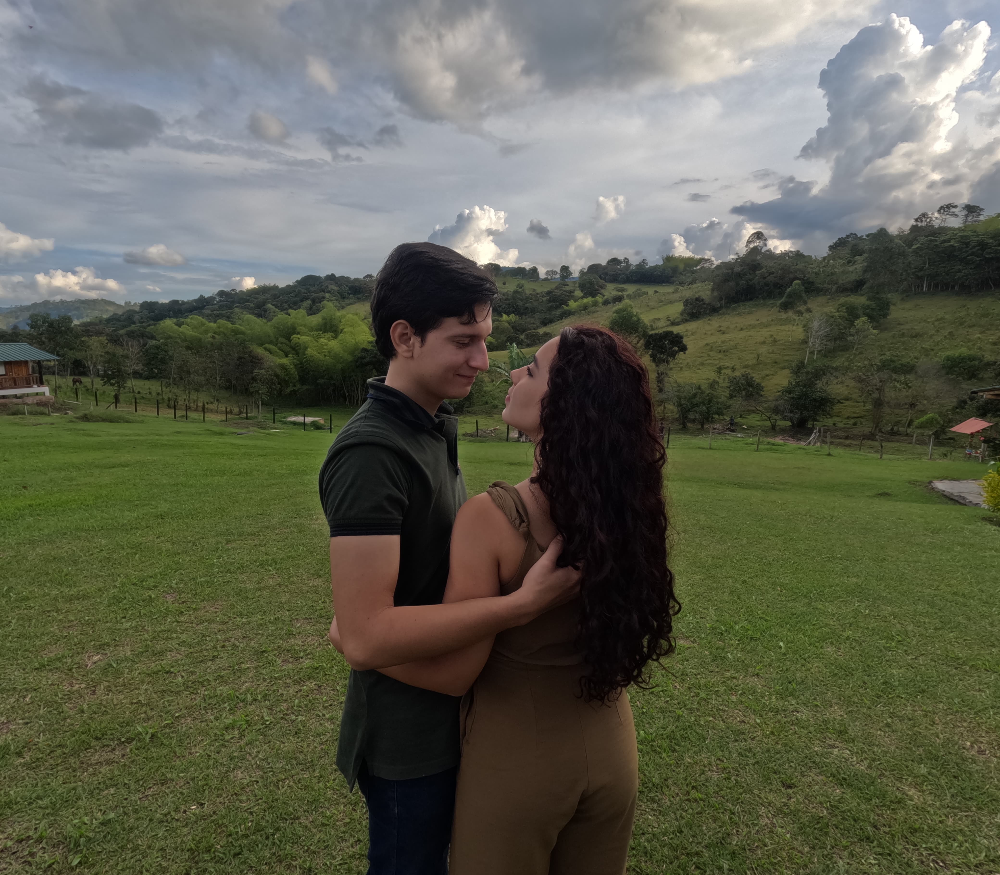
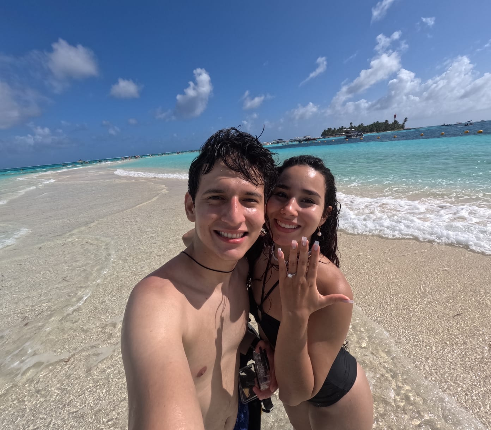
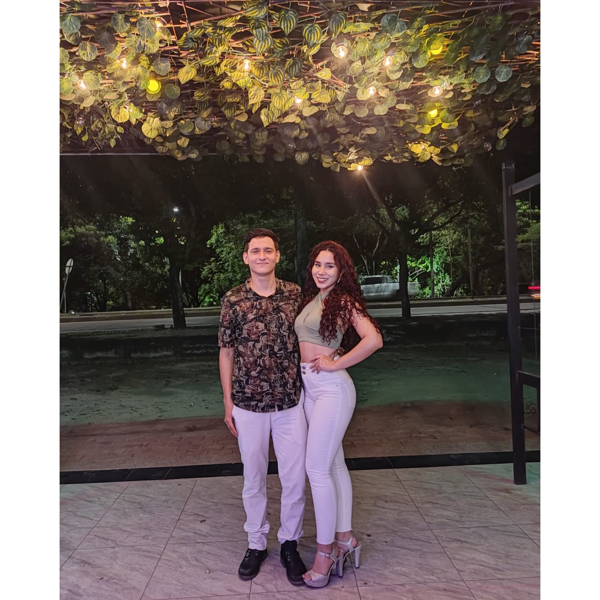

Nuestro Amor
Entre Música, Oración y Familia

Y ahora también,
junto a nuestro hijo
Entre Música, Oración y Familia
junto a nuestro hijo
Nuestra historia comenzó en el año 2020, en medio de un tiempo incierto para el mundo, pero perfectamente dispuesto por Dios para nosotros. Aunque nuestros caminos ya se habían cruzado en la universidad —entre ensayos, canciones y un grupo de música que compartíamos— fue en el silencio de la pandemia cuando el Señor empezó a escribir algo más grande. Entre acordes, conversaciones profundas y momentos de oración, nació primero una amistad sincera. Y con el tiempo, ese lazo se transformó en un amor firme, consciente y lleno de propósito.
Hoy, unidos también por el regalo más grande que Dios nos ha confiado —nuestro hijo— queremos consagrar nuestra familia ante Él. Deseamos que nuestro hogar esté cimentado en la fe, sostenido por la oración y acompañado siempre por la música que un día nos reunió. Ante Dios y ante ustedes, celebramos la gracia de habernos encontrado y de caminar juntos hacia una vida de santidad.



Los invitamos a acompañarnos en este momento sagrado y especial de nuestras vidas.
Esta invitación es únicamente para acompañarnos en nuestra Ceremonia de Eucaristía. No habrá recepción ni fiesta posterior. Queremos que este momento sea íntimo, recogido y centrado en la presencia de Dios, quien es el autor de nuestra historia.
Tu presencia en este día es el único regalo que deseamos. no sientas la necesidad de traer obsequios, sobres o detalles. Tu oración, tu bendición y tu compañía son más que suficientes para nosotros.
Si tienes alguna pregunta o necesitas más información, no dudes en contactarnos: